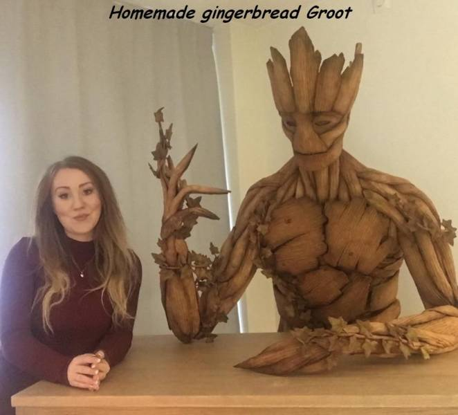

First my love for morse code. But how can I pretend to love morse code when I dont use it you might think...
interesting . -·-·
--··-- ·
·- -- - -·- -·-- --·· ·---- ·- ·-- --·- ···-- ----· --- -·· ···· -·-- · -·-· ···- ·· ·--
··- ····- -···· --··· ·· · ···-- --
--· ···
· --· ·-·· ··--- ··--·· ·---- ···-- -···· --·
- ·- -··
- ··-· -·
- --- --
- --· -··
-
·----
--
- -- ···-
- -····
- ··--··
- ··--
--

---- ··· --·- ··--- · ·--· ····· ·-·-·- ··· - -·-· ·-·· -· ·-· ··· ··-· ·-·· ··--·· · --- -··· -----
·-· -·· -··- ··--·· ·- - -··- ----- ····· --· -·· ·--· ---·· ---
··- · --- ····- ---·· · --
· ·-·· ·---- ---·· - ··- -· --·- ····- · ·--· ----- ··· -- -·· --··· ----· ·-· ·-- -·-· ·---- ·
-· -··· -·-· ·---- ·-· --· -·-· --·· ·-·-·- ·- ·- -·- ···- -··- --- ·--- --··· - ··- --·· --··· ·- --· ···-- ·-·-·- ·· ·-·
---·· ----· ·· --· ·· ··-· -·--
--· · -··· --··· ----· ··-· --··· ----· ··· ·· -·· ----- --··· --· -- ··· ·- --·- ----- ···-- -- ···- ··--·· ··· ··
·-· ·--· -··- ·-·-·- ·--· --·- ···- --- -· -·-· ---·· --- ·· ····- ····· -···· - ---
·--- ·--· -···· ·· ·-· ··--- ·-·-·- --··-- ·-· - --· · ·-·· ···- --·· ·· ·-- ·--· -··- · -·-- ····- ·-- ··· ··-· ···· -· ··--- ·
-·-·-
··--·· ·· ·-· -·-- ----- -···· · ·-- ··· ·--- ·--· ----- ·· ···· ··--- ···-- -·- ·· ····- ·-·-·- ··- -· ·---- --··· ··--·· ·- ··-
·- ·--- ----- ·---- ·-· -·-· -·-- ---·· ··- ·- -··- ---·· ·-· ·- -·- - -·-· ···-- ··--·· ·-· · ····· ----· --- -··· --··· ··--·· -- ·
··-· ----- --- - --- -··- ··--·· --· - -·-- ···-- ····-
-·· ·---- --··· --· -· ··--- --··· ·-- - -··- ···-- ····· - -·- -··· ··-· ···· --- ·- ·--- --·- - ·-· - ··- ··-· ···- ····- ··-· ·---
···- ·-- -· ·-· ···- --·· -
·-· ·-·· ··--- ····· · -- --- -··- --·· -···· -··- --·· ··--- --- · ····· -···· --··-- ·· ·-- ··· ·- ··-· --·- ····- ·- -·· ··--·· ··-
·- ··· ·-·· -·-- ·---- --· ----· --··-- ·
·-·· --·· ···-- -- -·- --- -- ·-·· --··-- ··--·· -·-- -···· ·-·-·- ·· --· -- ··-· -·-- ··--·· ·-- -- ·-- -·-· ··--- -- ··· ··-· ----·
-· ·-· ----- ····- --· -· ··-· ··--- ·-·-·- -- ··- ···- ····· ··--·· · --·- ---·· --··-- ··- ·-· -· ···- -··- - ··-· ·-·· -··- ···
-·- -- --·- ····- ----· ····- ····· --· ·· ··· -· ···· ·---- --··-- ·- ··- ··-· ·---- ·-·-·-
BACK TO TOP
Here is more
about Johan(the name)and
More about morse